ORTOFON (オルトフォン）
デンマークのオーディオメーカー。創立は1918年で、当初の名称はエレクトリカル・フォノフィルムズ・カンパニー（Electrical Fonofilms Canpany A/S 1948年にフォノフィルム・インダストリーに改称)、当時まだサイレントだった映画の映像・音声同期方式（トーキー）の開発を目的としていた。レコード関連のブランドとして成立したのが1948年、当初はSP/LP盤/ラッカーディスク再生用のカートリッジの製造を行っていた。母体企業傘下の会社として設立されたのが1951年、アームの販売や初期のステレオカートリッジの開発を行う。1959年にSPUシリーズを商品化。ほとんどのMC型カートリッジはSPUの発展形とする者もある程で、カートリッジの名門。また普及機〜中級機ではMI型の一種、VMS型のカートリッジを多種発売していた。またメインの製品がMC型であるため昇圧トランスも多い。さらに一般アームにはやや重い重量30gを越えるSPUシリーズを持つ都合上、アームも伝統がある。
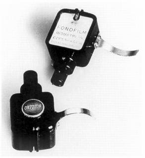
（1948年のType-C。このころは母体であるフォノフィルム・インダストリーの銘も入っている）1970年頃の代理店は「オーディオニクス」。1970年代末には「ハーマン・インターナショナル」が扱うようになり、1987年8月1日から日本法人である「オルトフォン ジャパン」が引継、今に至っている。「オルトフォン ジャパン」移行時にはMC型のユニット交換の値下げが行われた。
その製品は膨大であり、すべての製品が日本に紹介された訳ではないが、1980年代前半までは製品数は増える一方だった。しかし1986〜87年頃、大幅なモデルの整理が行われた。それ以降も新製品の開発は行われているが、「オルトフォン ジャパン」時代以降の材質の一部を変更した記念モデルや限定モデル商法、高額製品路線など、アナログ関連機器の現状について、このブランドの影響を無視できない。
�T.カートリッジ
1.MC型
�@SPUシリーズ
登場したのは1959年で、あまりにも有名なMC型ステレオカートリッジの王者。SPUは「Stereo
Pick-UP」の頭文字。大別すると、一般アーム用の「G」タイプと、特殊な業務用アーム用の「A」タイプに分かれる。「A」タイプのものは接点の位置の違いや、ロックピンが通常と逆など、一般のアームには直接装着できない。さらに針先が丸針のものと、楕円針のものがあり、楕円針には「E」がつく。またヘッドシェル内に昇圧トランスを組み込んだものがあり、その場合は「T」がつく。
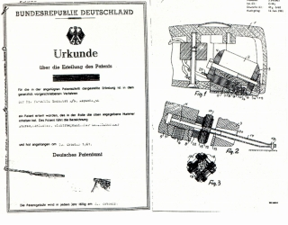
(SPUのドイツでの特許図面 基本的構造は今も変わらない）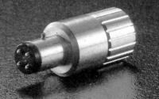
(アダプターAPJ-1 Aタイプは一般のアームではアダプターが必要。ただし装備すると総重量は35gを超え、使えるアームは少ない。）
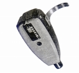
(SPU-G初期型 下面にカバーがついている）(1)オリジナルモデル
1959年から続くMC型の歴史的モデル。ただし仕様は何度か変更（＊）されている。トランス内蔵タイプは1980年代後半、それ以外は1990年代初頭に終了。（トランス内蔵タイプの「製造」は1979年に終了との記述もある）
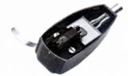
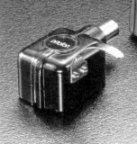
(左 SPU-GTE 右 SPU-A）＊SPUオリジナルの仕様の変化 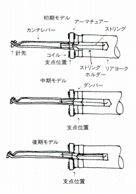
基本構造は変わらないが、内部の仕様はいくつかの変遷を経ている。まずサスペンションストリングの位置の変化である。初期の物は原特許のままであるが、その後、レコードのダイナミックレンジ拡大にあわせ、支点位置を後ろにずらした。ただし、慎重にエージングすれば、初期のものの方が腰の強い音がすると、珍重する意見もある。その後、初期モデルに近い位置に支点はずらされた。
またコイル・インピーダンスも初期のものは1.5Ωであるが、中期のものは2Ωとなっている。当サイトの資料は1970年代以降のものなので、2Ωである。SLシリーズなどとの部品の共用化の影響とされている。なお生産が終了した後、復刻されたMeisterモデルでは、1.5Ωに戻された。
(2)Goldモデル
1981年に登場した、銀線コイル使用や高精度研磨針などの特別仕様版。名前が示すように、接続接点やカートリッジボディ上部、モールドカバー部などは金メッキ仕上げ。1990年代初頭に終了。
(3)Classicモデル
1987年に登場した、初期の仕様を再現したとされるモデル。針先の形状などを初代のタイプを再現したとされるが、出力電圧などは1970年代後半以降のモデルと同じであり、再現の忠実度は不明である。ヘッドシェルがモールドからメタルになったこと、ロゴマークの色などはオリジナルと違う。現在はＧタイプの「MK�U」モデルが販売されている。
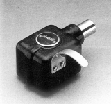
(SPU Classic AE ロゴも旧デザインとなっている)SPU-Classic G SPU-Classic GE SPU-Classic A SPU-Classic AE
(4)Monoモデル
1989年に登場した、生産終了したCG25D/CA25Dの後継にあたるモノラル・モデル。モノラルカートリッジによくあるが、MC型だが出力電圧3.0mVの高出力タイプ。現在は「MK�U」モデルが販売されている。
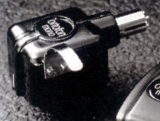
(SPU-MONO A)(5)Referenceモデル
1989年に登場した、スタイラスに伝統的な丸/楕円針以外（レプリカント100）を採用するなどした本格的な改良モデル。発電コイルも6N銅線である。なお1989年発売のものをSPU-Gold
Reference、「Gold」のつかないSPU-Referenceの発売を1991年とする資料があるが、価格・スペックの差がないので同一とみなす。
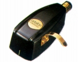
(SPU-Reference G)SPU-Reference G SPU-Reference A
(6)Meisterモデル
SPUシリーズの設計者ロバート・グッドマイセンの在職50周年女王勲章受章を記念し、1992年に登場した限定生産モデル。ネオジウム磁石を採用している。後にコイルを6N銀線に変更した後継機、SPU-Meister
Silverが登場する。現在はMeister Silverの「MK�U」モデルが販売されている。
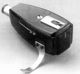
(SPU-Meister GE)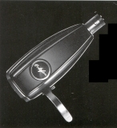
(SPU-Meister Silver GE)SPU-Meister Silver GE SPU-Meister Silver AE
(7)Classic GT
モデル
1980年代後半に途絶えたトランス内蔵タイプの復活。なお復活した際の資料に1979年以来14年ぶりとの記載があるが、手元の1987年12月版カタログに旧GTタイプが生産終了ながら掲載されていた為、14年ぶりとの見解は取らない。
(SPU-Classic GTE)
SPU-Classic GT SPU-Classic GTE
(8)Royalモデル
1998年に登場した、金・銀合金「エレクトラム」コイルを採用したモデル。ネオジウム磁石の製品がある時代にあえてサマリュウムコバルト磁石を採用、理由は音質上の問題だそうだ。シェルなしの機種「N」タイプがある。現在は「MK�U」モデルが販売されている。なおこのシリーズの「SPU-Royal N」について、カタログでは「初」のシェルなしモデルとの説明がある。しかし1970年代末にはSPU
A及びAEのシェルなしモデルが販売(A=\34,000/AE=\39,000)されていた記述がある。
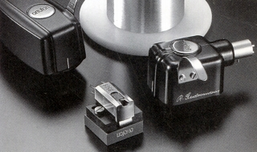
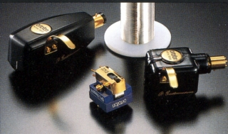
（このシリーズには創立80周年の記念モデルとしての側面もある。資料によってはG・Aにはシェルに創立(1918）年が記載されたものがある。）
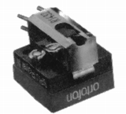
SPU-Royal N SPU-Royal G SPU-Royal A
�AＳ-15系
オルトフォンがSPUの次に開発したカートリッジ。コンプライアンスの向上と軽針圧化を目指したこと、バーチカルトラッキングアングルを15度にしたこと、内部構造の合理化などが行われた。SPUのTタイプと同様にトランス内蔵。「SL」系への過渡期のモデル。
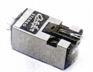
(S-15TE)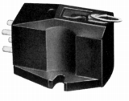
（こちらは1960年代後半に輸入されたトランスレスタイプS-15T）�BＳＬ系
S-15系に次ぐ、1970年代中盤までのオルトフォンMC型の主力シリーズ。より一層のハイコンプライアンス化と生産性の向上（プリント配線技術の利用など）を果たした。この機種を量産型MCの世界最初のモデルとする記述もある。1967年に登場した初代モデルはＳ-15系のテイストを残したデザインで、1974年の2代目モデルから、VMS(MI)型のMシリーズやFシリーズに近いデザインとなった。なお3代目のSL20E・SL20Qは、実質的に後継モデルである、MC20からの逆派生モデルである。
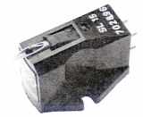
(SL15E)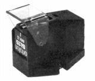
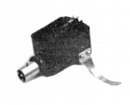
(左 SL15MK�U 右 SL15-A/E）SL15MK�U SL15EMK�U SL-15A/E SL15Q SL15A
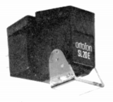
(SL20E)�CMC10、20、30系
1970年代後半からのオルトフォンの主力商品。1976年登場のMC20はSL15MK�Uをベースに開発された新機種で、ラインコンタクト針の採用・バーチカルトラッキングアングルを15度から20度へ変更・針先実行質量の約30％軽減などを織り込んだ。さらに1978年にMC10、MC30との3モデル体制を確立した。MC10は入門用ともいうべき廉価モデルであり、MC30は、MC20をベースとした徹底したグレードアップモデルで、三重構造ダンピング方式（ワイドレンジ・ダンピング・システム）（＊）を開発し、また高級線材（この場合は「銀」）を発電コイルに採用するなど、後の超高級モデルの礎ともなったモデルである。
1979年からの第2世代のMC10MK�U・MC20MK�Uは、MC30の三重構造ダンピング方式を採用した改良機である。その為MC30に相当するモデルがない。
第3世代は1983年のMC10Superから始まった。従来の四角形状のコイル巻枠からMC2000で採用した十字型コイル巻枠に変更、出力電圧のアップを達成した。またMC20Super・MC30Superでは、バンデンハル・スタイラスを採用し、またハウジングもアルミ製となる。
1988年登場の第4世代では主に、スタイラスの改善が目立ち、フリッツ・ガイガー製に変更された。レコードの縮小と共にMC型カートリッジ全般に「高級化」が始まった。入門機であるMC10Super�Uでもフリッツ・ガイガーのType�Uがおごられ、ハウジングも従来の樹脂製からアルミ引き抜き材となった。
1989年からのHMC10・HMC20・HMC30は、このシリーズに入れるには異論があるかもしれないが、デザインなどから、当サイトでは第5世代として扱う。1987年の高級機MC3000で導入したネオジウム磁石を導入したモデルである。
1993年登場の第6世代は、シェルとの取付面に3箇所の突起を設けた3点支持マウンティング方式を採用、発電コイルにMC5000などで導入した7N銅線が使われている。
＊三重構造ダンピング方式（ワイドレンジ・ダンピング・システム）
MC30で採用された、低域と高域でそれぞれダンピング量をコントロールするシステム。当初は「セレクティブダンピング」方式とも呼ばれていた。アーマチュアと基礎支持部の背後に、プラチナ製ワッシャーを特殊なゴムダンパーで挟んでセットするもの。低域では2枚のゴムダンパー大振幅のダンピングをし、高域ではワッシャーがブレーキとして働き、前側のダンパーのみが作動するもの。1982年に特許を取得。そのころから「ワイドレンジ・ダンピング・システム」と呼ばれるようになった。「オルトフェィズ理論」の中核をなすもの。
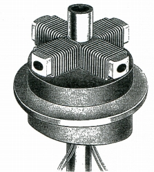
(ワイドレンジ・ダンピング・システム)
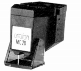
(MC20)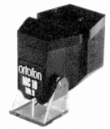
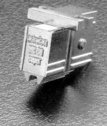
(MC30Super) 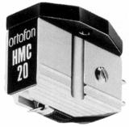
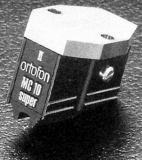
MC10 Super�U MC20 Super�U MC30 Super�U
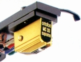
MC10 Supreme(MC10 S) MC20 Supreme(MC20 S) MC30 Supreme(MC30 S)
*1993年にオルトフォン社創業75周年を記念してスタートしたMC Supremeシリーズは、翌1994年秋になぜか名称変更と若干のデザイン変更が行われた。1994年秋以降の名称が「MC*0 S」である。同社のカタログによれば「登録商標」上の問題らしい。
�Dコンコルドタイプ
MI(VMS）型のコンコルドシリーズのデザインを採用したMC型。MI(VMS）型と同様に一体型と一般型がある。一般型のデザインは後のOMシリーズの原型となっている。MC200は、ボロンカンチレバーや振動系・磁気回路などの小型化・軽量化を図ったローマス/ハイコンプライアンスモデル。
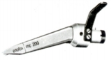
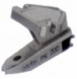
(左 MC200 右 MC200Universal)MC100Universal MC100 MC200Universal MC200
�E高出力タイプ
MM型並みの出力のMC型。短命なシリーズだが、2000年以降に同様のコンセプトのMC1/3
Turboが登場する。なお日本には輸入されなかった可能性が高いが、X1ベースのT4P型やX5という機種も存在するらしい。
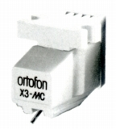
(X3-MC)�F超高級機・限定モデル
SPUから発展してきた同社のMC型に新風を吹き込んだのが、超高級機シリーズである。1982年に登場したMC2000は鉄芯コイル型MCが伝統の同社で初めて登場したアルミ十字型巻枠の、いわゆる空芯コイル型MCであり、ハウジングにアルミ材を採用した。また「オルトフェイズ」理論（＊）はこのモデルから提唱された。MC2000の成果である十字型巻枠やアルミ製ハウジングはMC10/20/30Superらに生かされた。1987年に登場したMC3000は、フリッツ・ガイガー製スタイラス（レプリカント100）、ネオジウム磁石による発電系を採用、ハウジングはセラミックである。1989年のMC2000MK�Uでは巻枠がカーボンファイバーとなり1990年のMC5000で、サファイヤ・カンチレバーや7N銅線が使われた。1993年のMC7500では8N銅線やチタン削り出しのハウジングが使われた。またこれら超高級機のジュニアモデルとして、いくつかの限定モデルが登場した。
＊オルトフェイズ理論
アナログオーディオ製品では、ワイドレンジ化・周波数特性のフラット化が優先されるが、そうした姿勢は、高域での位相特製が大きくずれる場合があるらしい。オルトフォンでは解析により位相のづれを抑えることが「良い音」の実現につながると判断して、位相ずれの抑止がMC2000から提唱された。カートリッジではワイドレンジ・ダンピング・システムと適性な磁気回路により達成され、また昇圧トランスでも提唱している。MC2000では20kHzでの針先の振動と出力波の位相差を5度以内に押さえ、対になるトランスT2000では、100kHzでの位相遅れを10度以内に抑制した。その後も発展し、MC7500では20kHzでの位相差を2度以内まで改善された。
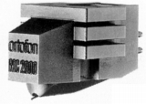
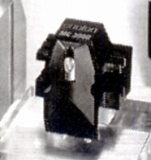
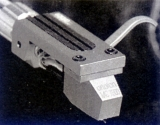
(左 MC2000 中央 MC3000 右 MC7500)MC2000 MC2000MK�U MC3000 MC5000 MC7500
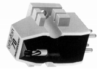
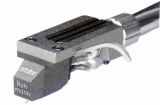
(左 70 Anniversary(MC70) 右 MC Rohman )70 Anniversary(MC70) Erik Rohman Signature MC Rohman
�Gモノラル用(SPUタイプ以外）
Type-Cの流れを汲むモノラルカートリッジ。「25」がLP用、「65」がSP用。数字は針先半径、2文字目のアルファベットはシェルのタイプを表す。1980年代末に生産終了し、SPU-MONOシリーズにバトンタッチしたが、その後改良版で復活した。
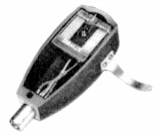
(CG25D)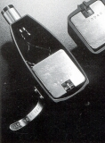
(CG25Di)�H現行世代機
トンネル状のネオジウム磁石の両端を純鉄ポールピースで塞いだ閉鎖した「クローズド・マグネチック・サーキット」を導入した機種。「クローズド・マグネチック・サーキット」は従来方式（MC
Rohman）のオープンマグネット方式より発電機構は約1/6となり、逆にエネルギー変換効率は35％向上しているいう。また加工技術ににMIM（Metal
Injection Moiding)プロセスを導入した。当サイトの範囲である〜2000年では、MC
Jubilee、1機種だが、その後、同社の高級機の主流となる。
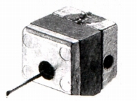
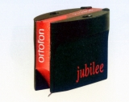
(MC Jubilee)2.VMS(MI)型
1980年代半ばまでのオルトフォンの普及価格帯の商品は同社がVMS型と呼ぶMI型の一種の発電形式を採用していた。発明は1969年、同年に最初のモデルM15/MF15が登場、日本には1970年から導入されたようだ。
�@M、MF系
1969年登場のVMS(MI)型最初のシリーズ。F-15、FF-15系がスタートするとこのシリーズは上級機種扱いになった。「M」がハイコンプライアンスの軽針圧タイプ、「MF」が頑丈さ優先の標準針圧タイプである。M15
SUPERは1972年に登場した振動系の軽量化を図った上位モデル。一方、MFシリーズでは、安定した針圧を生かした、放送局用モデル（MF15BC）やSPレコード用（MF15/65）が登場した。Mシリーズ内では、針先の互換性があるといわれる。1977年にM15E
SUPERの後継機M20E SUPERが登場、このモデルは軽量・高感度アーム向けで、あわせて重量級アーム向けのM20FL
SUPERが用意された。
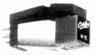
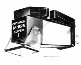
(左 M15 右 M15E SUPER)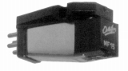
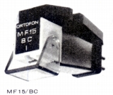
(左 MF15 右 MF15BC)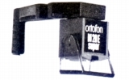
(M20E SUPER)�AF-15、FF-15系
1973年登場のオルトフォンのベーシックモデル・シリーズ。Mシリーズとは違い、スタイラスは接合針である。「F」の方が軽針圧タイプ、「FF」の方がコンプライアンスを下げた標準針圧タイプ。1977年に後継モデルの「MK�U」となった。
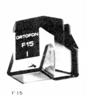
(F-15)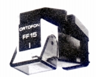
(FF-15)FF15 FF15E FF15 MK�U FF15X MK�U FF15E MK�U FF15XE MK�U
�BVMS系
1974年登場のVMS(MI)型の中級機を務めたシリーズ。従来の「M」シリーズとは構造が違い、リング・マグネットの位置が、ボディ側からスタイラス・アッセンブリーに内蔵となった。その為、針先の互換性はない。1977年に、リード線の取付法と出力端子の位置を変更、接点の金メッキ化した「MK�U」となり、1980年に下位モデルと上位モデルが追加された。
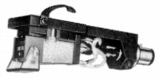
(VMS10E MK�U)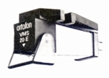
(VMS20E)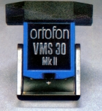
(VMS30 MK�U）�Cコンコルドタイプ
1979年に登場したスリムなデザインを特長とするシリーズ。1978年には先行して、デザインコンセプトが公表されていた。シェル一体型のConcordeと一般シェル向きのLMシリーズがある。そのデザインを採用したMC型やMM型も作られた。当時流行のロ−マス化に対応した製品で、シェル一体型のConcorde
30で6.5g、通常型のLM30で2.6gである。
(左 LM20 右 LM30H)
LM10 LM15 LM20 LM20H LM30 LM30H
(Concorde 20)
Concorde 10 Concorde STD Concorde 20 Concorde 30
3.MM型
MC型を主力とし、MI（VMS）型でベーシックモデル〜中級機を構成していたオルトフォンで、国内にMM型が登場したのは1986〜87年のモデルの整理でMI（VMS）型が姿を消した後からであった。このころにはシュアー・エラックのMM型特許は終了していたはずである。
�@500シリーズ
T4Pとの兼用型？の300シリーズの上位機種シリーズ。最上級の540にはスタイラスにフリッツ・ガイガーType�Uが用いられた。
(540)
�Aコンコルドシリーズ
1970年代末のVMS(MI)型のコンコルドのデザインを引き継ぐDJ用モデル。いつ頃からあるかは不明だが、国内では、まずDJ等の業務用として流通し、1990年代半ばから一般にも市販されたようだ。
(Concorde Gold)
Concorde PRO S Set Concorde DJ S Concorde Night Club S Concorde Gold
4.T4Pタイプ
テクニクス（現パナソニック）の提唱したT4P規格に、オルトフォンは比較的熱心に、対応した方であった。MC200をベースにしたTMC200など、このタイプ屈指の高級モデルであった。基本的にMC/VMS(MI)型のコンコルドタイプの流用のようだ。
�@MC型
(TMC200)
(MCP100Super)
�AVMS(MI)型
(TM30H)
(OMP30)
�BMM型
1980年代後半に入りモデルを大幅に整理したオルトフォンのローエンド製品。T4P規格品だが、重量・針圧ともこの規格の標準をはずれており、汎用での使用を主体にしたものかもしれない。なおモデル間の差異はスタイラスの差だけと明言している。
(320U)
�U.昇圧トランス・ヘッドアンプ・フォノイコライザー
1960年代には、すでに昇圧トランス・ヘッドアンプとも開発されていたが、オルトフォンは伝統的に、トランスによる昇圧を基本としてきた。当初は実にシンプルな、同社の低インピーダンスMC型カートリッジの昇圧をするだけのシンプルな製品だったが、やがてMM型を意識したパス・スイッチ（〜STA6600）や、一次インピダンス切替（T30）など、多機能なものもでてきた。また超高級モデルMC2000に合わせたT2000からトランスにも高級線材をコイルに用いるようになった。なお1970年代中盤に一時的にヘッドアンプに手を着けたことがあり、1990年代からはフォノイコライザーアンプも発売した。
1.昇圧トランス
伝統的に自社の低インピーダンスのMC型に焦点を絞った製品が多い。
(左 STM-72 右 STA6600)
(STA41)
(STA-384)
(T-20とT-30)
(T20MK�U)
(T-3000)
T-2000 T-3000 T-5000 T-7000 T-7500
(SPU-T1)
(T1000)
2.ヘッドアンプ
オルトフォンは伝統的にMC型の昇圧はトランスを選択するが、1970年代後半にはヘッドアンプも手がけた。
(MCA76)
3.フォノイコライザーアンプ
1990年代半ばに登場。当初はMC型の昇圧は外部トランスで行うのがオルトフォンの主張であるとして、MM型専用設計であったが、その後すぐに、MC型対応のトランス内蔵モデル（1000a)が追加された。
(EQA-1000)
�V.トーンアーム
スタティックバランス、ダイナミックバランスのもの双方を古くから用意していた。30gを超えるSPUを想定した製品が多い。SMG-212はスタティックバランス・アームで、1960年代からの製品である。
AS-212は、VMS型カートリッジを想定し、1971年に登場した軽量タイプのスタティックバランス・アームで、設計でいえば、同社では一番新しいシリーズであり、他社製品並みにアームリフターやインサイドフォースキャンセラーを持つ。RMG-212/309はダイナミックバランス・アームで1960年代からの製品である。RS-212は1967年登場の後発のダイナミックバランス・アームで、針圧比例型のアンチ・スケーティング機構がついている。
国内販売は一度途絶えたが、1994年より再び販売されるようになった。ただし1990年代の製品は、基本的に1960年代前半までに設計された製品のリファイン・モデルであり、サブ・ウェイトシステムやインサイドフォース・キャンセラー、ラテラル・バランサーといった「近代的な」装備は一切ない。RMA212i/309iも1960年の同社特有のAシェル対応アームの復刻版である。
(SMG-212)
(AS-212)
(RMG-309)
RMG-212 RMG-309 RMG-212Limited RMG-309Limited RMG212i RMG309i RMG309i Anniversary
(RS-212)
(RMA-309i)
�W.その他
�@ヘッドシェル
�Aリードワイヤー
�Bその他